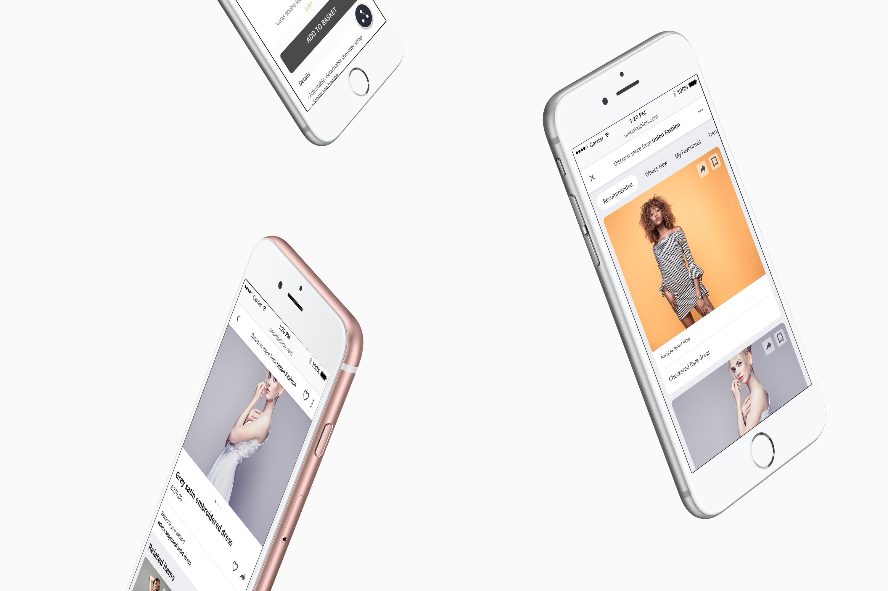
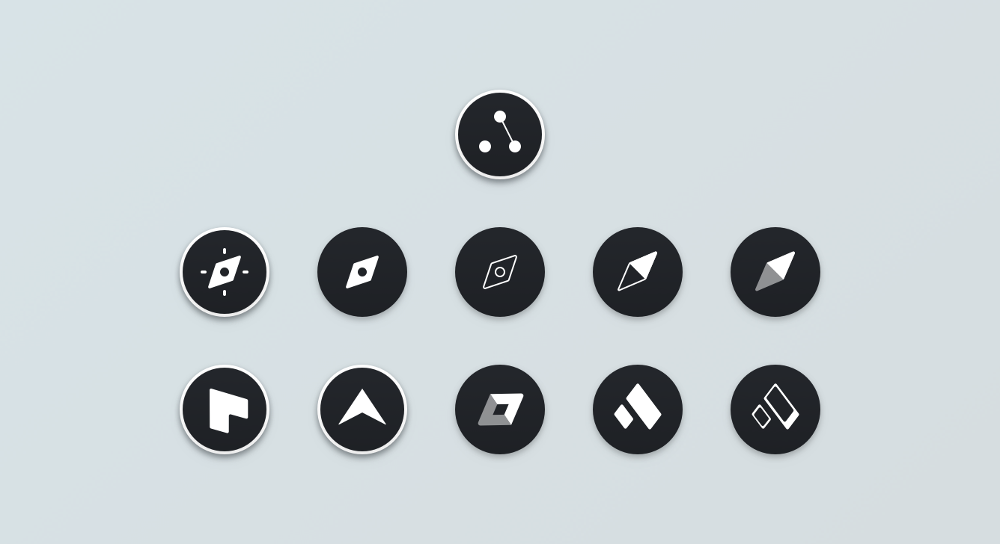
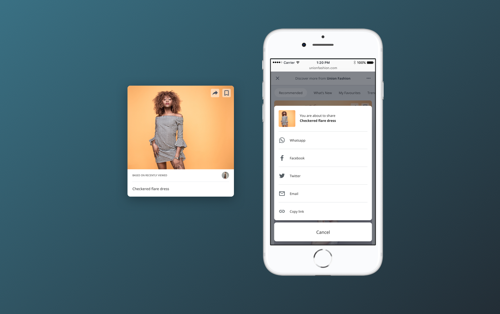
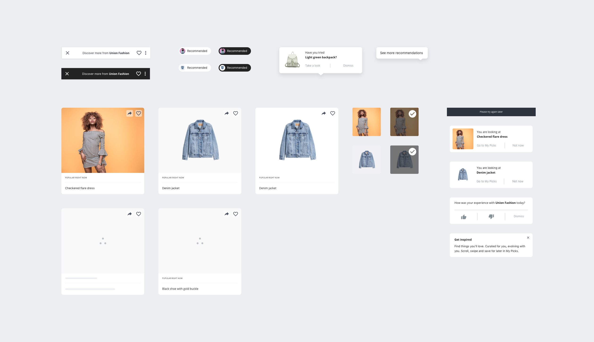
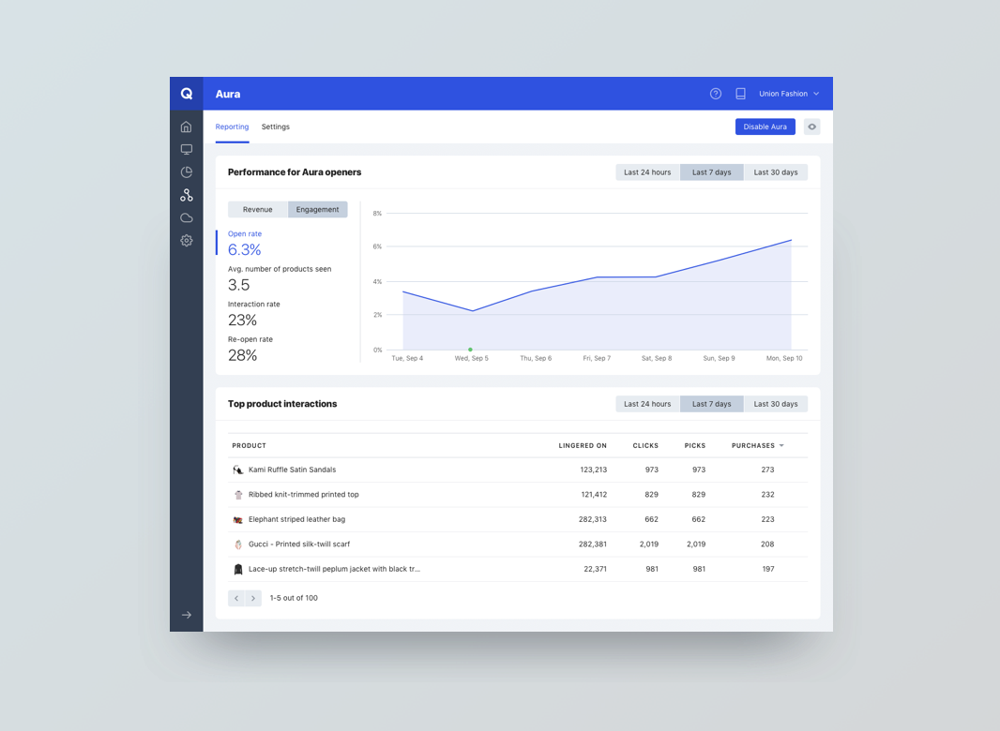
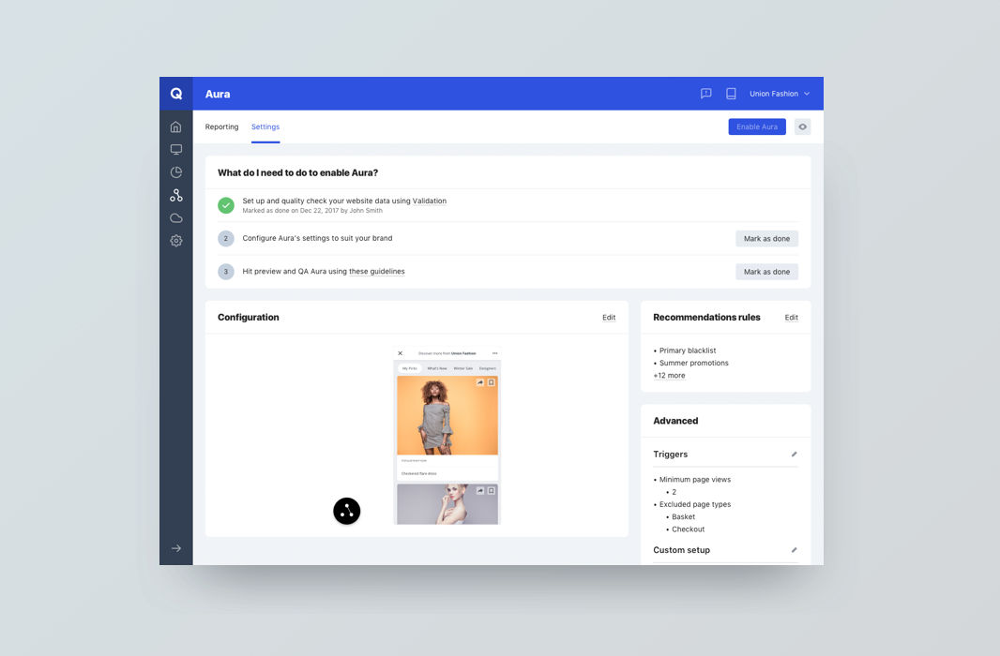
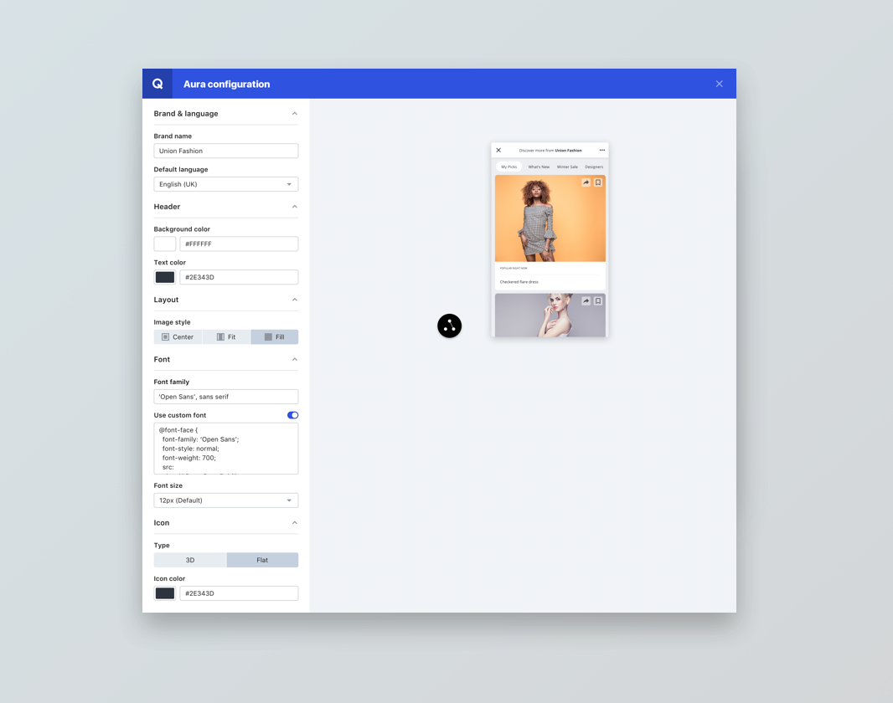

Product Design
QUBIT AURA
Time is scarce nowadays and spending that precious time searching through product catalogues on your phone can be a frustrating and unfruitful experience. Qubit Aura is designed to ease our suffering by improving the way we discover products on the mobile web through machine learning.
WHAT
UX design
UI design
User research
Prototyping
Data visualisation

Screens from Qubit Aura
ICON
This was a fun, meaty project. Aura had been in development for about a year when I started working on it, but we were still looking for the right icon for users to click on to enter Aura. It was something that needed to have its own voice and stand out on a busy screen, but also fit with a variety of brand styles.
We did several rounds of research, narrowing our options down each time until we had a winner!

A snapshot of the different icons that were explored and tested out
SHARING
We’ve all been there, looking for the perfect outfit for an upcoming event. You find something that might fit the bill but need reassurance so hit share. Commerce is becoming more and more social. Social proof reassures us when we aren’t sure if something’s on trend, reviews tell us other people’s experiences. So we started developing Aura’s sharing functionality. This posed some challenges in terms of catering for multiple languages and multiple screen sizes.

Sharing menu and tile
DESIGN SYSTEM
As Aura grew so did its component library, so I spent some time refining the design system, aligning components and creating reusable elements to speed up the design process.

A selection of some of the components that make up the Aura design system
REPORTING
Because Aura was a different to anything Qubit had done before the reporting needed to be different too. We had to step away from our traditional measurements and find a whole new way of showing how much value Aura was driving. You can view a more detailed write up about the reporting development here.

Aura's reporting interface
CONFIGURATION
It quickly became clear in alpha and beta testing that Aura needed to have configurable options so that it fitted in with a client’s branding. We’re still working on this to give even more control over the Aura experience to the client, whilst keeping the ability to iterate fast and test improvements to the experience for all users.

Settings section allowing you to configure Aura's visual configuration as well as set up your recommendation strategies

Configuration environment for customising how Aura looks on site